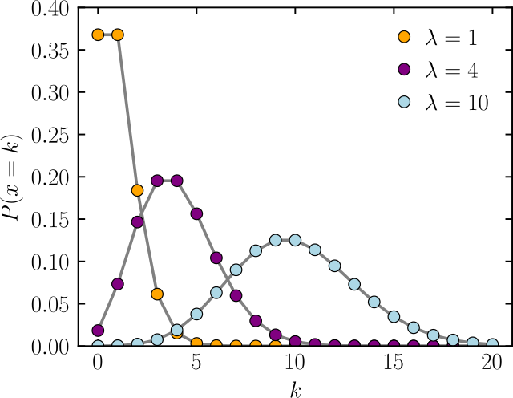
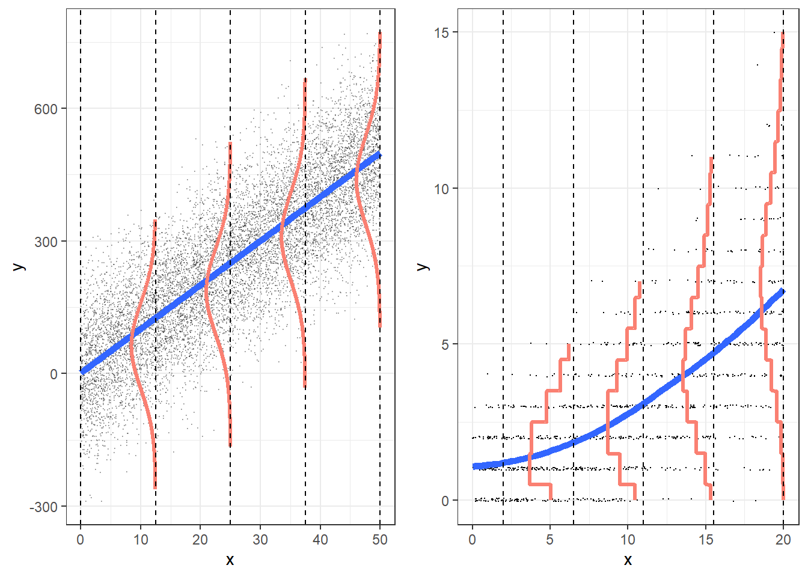
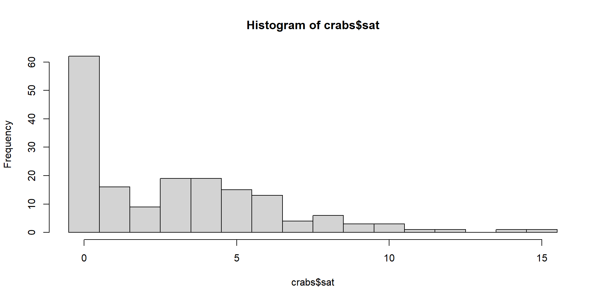
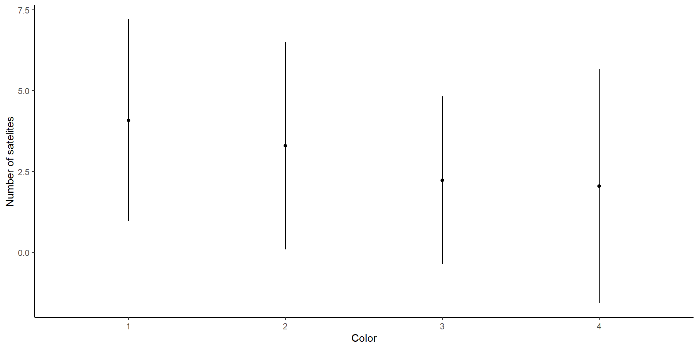

crab sat weight width color spine
1 1 8 3.05 28.3 2 3
2 2 0 1.55 22.5 3 3
3 3 9 2.30 26.0 1 1
4 4 0 2.10 24.8 3 3
5 5 4 2.60 26.0 3 3
6 6 0 2.10 23.8 2 3Overdispersion and zero-inflation
Announcements
We will look at overdispersion and zero inflation
We will finish the linear model aspect of the course
When we are back we will talk about “Generalized Mixed effects Models” –> combine mixed effects and generalized linear models
These can also have zero inflation and overdispersion
Then we will talk about GAM’s. Very important topic!
Some classes for plotting, and data management
No class this Friday, but I will be in my office from ~10 to 3 pm
Poisson distribution

Poisson distribution

What happens when variance isn’t always \(\lambda_i\) ?
- Poisson assumes that the mean \(\lambda_i\) is equal to the variance \(Var(y_i|x_i) = \lambda_i\)
- This very rarely happens!
- Usually \(Var(y_i|x_i) > \lambda_i\): overdispersion
- We need to correct for this
What causes overdispersion?
Omission of important variables
Measurement error
Data
CLUSTERING!!!!
Random effects
Outliers
etc
Poisson and zeroes
Another issue with the Poisson distribution is the number of zeroes
Oftentimes we observe more zeroes than expected by the Poisson distribution
We call this zero inflation
Reasons for zero-inflation
Structural (or process) zeroes
Imagine you are looking at the abundance of a wild vine 🍃 in the Smokies.
You set up random plot to sample using coordinates
Some areas (river and rocky shore) are unable to produce nonzero counts
You have two processes: one that produces only zeroes (inhabitable areas), and one that produces
Reasons for zero-inflation
Clustering: Can be temporal or spatial
You get many zeroes, and many high counts. High counts lead to a high \(\lambda\) whcih would expect low number of zeroes
Reasons for zero inflation
Observer error
For example, jaguars are very hard to observe in camera traps
If detection probability is low, then there will be lots of zeroes
Intermittent occurance
For example, number of flu infections
More zeroes in the summer than in the winter
Example
Horseshoe crabs 🦀

Horseshoe crabs
Females are grasped by a male for reproduction
Satellite males are individuals that do not directly grasp a female.
These males attempt to fertilize eggs externally by releasing sperm in close proximity to a nesting pair, increasing their chances of reproductive success.
Example
Horseshoe crabs 🦀
Note
Counting totality of males per female, including “attached” one
Example

Horseshoe crabs
We are interested in the effects of color on the number of satellites.
First, let’s look at the model fitting:
Call:
glm(formula = sat ~ color, family = "poisson", data = crabs)
Coefficients:
Estimate Std. Error z value Pr(>|z|)
(Intercept) 1.4069 0.1429 9.848 < 2e-16 ***
color2 -0.2146 0.1536 -1.397 0.162487
color3 -0.6061 0.1750 -3.464 0.000532 ***
color4 -0.6913 0.2065 -3.348 0.000814 ***
---
Signif. codes: 0 '***' 0.001 '**' 0.01 '*' 0.05 '.' 0.1 ' ' 1
(Dispersion parameter for poisson family taken to be 1)
Null deviance: 632.79 on 172 degrees of freedom
Residual deviance: 609.14 on 169 degrees of freedom
AIC: 972.44
Number of Fisher Scoring iterations: 6Looking at the data

Using performance
What are the problems of overdispersion
Discuss, what problems can arise if there is overdispersion
Overdispersion and bias…
Overdispersion does not bias the estimates… but can affect the standard error
We can fit this in many different ways
Method 1
In Poisson:
\(\lambda_i\) is the expected value
\(\lambda_i\) is the variance
We can do a “quassipoisson”:
\(\lambda_i\) is the expected value
\(\phi\lambda_i\) is the variance
\(\phi\) is an inflation factor
Call:
glm(formula = sat ~ color, family = "quasipoisson", data = crabs)
Coefficients:
Estimate Std. Error t value Pr(>|t|)
(Intercept) 1.4069 0.2655 5.299 3.6e-07 ***
color2 -0.2146 0.2855 -0.751 0.4534
color3 -0.6061 0.3252 -1.864 0.0641 .
color4 -0.6913 0.3838 -1.801 0.0734 .
---
Signif. codes: 0 '***' 0.001 '**' 0.01 '*' 0.05 '.' 0.1 ' ' 1
(Dispersion parameter for quasipoisson family taken to be 3.454476)
Null deviance: 632.79 on 172 degrees of freedom
Residual deviance: 609.14 on 169 degrees of freedom
AIC: NA
Number of Fisher Scoring iterations: 6methods
Call:
glm(formula = sat ~ color, family = "poisson", data = crabs)
Coefficients:
Estimate Std. Error z value Pr(>|z|)
(Intercept) 1.4069 0.1429 9.848 < 2e-16 ***
color2 -0.2146 0.1536 -1.397 0.162487
color3 -0.6061 0.1750 -3.464 0.000532 ***
color4 -0.6913 0.2065 -3.348 0.000814 ***
---
Signif. codes: 0 '***' 0.001 '**' 0.01 '*' 0.05 '.' 0.1 ' ' 1
(Dispersion parameter for poisson family taken to be 1)
Null deviance: 632.79 on 172 degrees of freedom
Residual deviance: 609.14 on 169 degrees of freedom
AIC: 972.44
Number of Fisher Scoring iterations: 6
Call:
glm(formula = sat ~ color, family = "quasipoisson", data = crabs)
Coefficients:
Estimate Std. Error t value Pr(>|t|)
(Intercept) 1.4069 0.2655 5.299 3.6e-07 ***
color2 -0.2146 0.2855 -0.751 0.4534
color3 -0.6061 0.3252 -1.864 0.0641 .
color4 -0.6913 0.3838 -1.801 0.0734 .
---
Signif. codes: 0 '***' 0.001 '**' 0.01 '*' 0.05 '.' 0.1 ' ' 1
(Dispersion parameter for quasipoisson family taken to be 3.454476)
Null deviance: 632.79 on 172 degrees of freedom
Residual deviance: 609.14 on 169 degrees of freedom
AIC: NA
Number of Fisher Scoring iterations: 6- Differences?
Analysis of Deviance Table (Type II tests)
Response: sat
LR Chisq Df Pr(>Chisq)
color 6.8469 3 0.07694 .
---
Signif. codes: 0 '***' 0.001 '**' 0.01 '*' 0.05 '.' 0.1 ' ' 1qAIC
\[ QAIC = \frac{-2 * log-likelihood}{\hat{c}} + 2 * K \]
Quasipoisson has no AIC!
Back to over dispersed
# Overdispersion test
dispersion ratio = 3.454
Pearson's Chi-Squared = 583.806
p-value = < 0.001Overdispersion detected.# Check for zero-inflation
Observed zeros: 62
Predicted zeros: 11
Ratio: 0.18Model is underfitting zeros (probable zero-inflation).Quasipoisson will never fix the overdispersion. The data is still overdispersed. We are just taking that into account
This is good, we are making better inferences, from imperfect data
Other solutions
Oftentimes adding random effects or running a more complex model may solve the overdispersion (if the dispersion due to other variables!)
If the overdispersion is paired with more zeroes than expected, then, we can use a different distribution
# Check for zero-inflation
Observed zeros: 62
Predicted zeros: 11
Ratio: 0.18Model is underfitting zeros (probable zero-inflation).Potential solutions are:
Negative binomial
Hurdle models
Mixed models!
Mixture models
Negative binomial distribution
Discrete probability distribution… similar to Poisson
Two parameters (like normal distribution!)
\(\mu\) and \(\theta\)
But! \(\theta\) is not variance! Remember in counts… variance increases with mean!
Variance: \(\mu + \frac{\mu^2}{\theta}\)
Think about this… what values of \(\theta\) “decrease” variance?
Negative binomial
Call:
glm.nb(formula = sat ~ color, data = crabs, init.theta = 0.8018786143,
link = log)
Coefficients:
Estimate Std. Error z value Pr(>|z|)
(Intercept) 1.4069 0.3526 3.990 6.61e-05 ***
color2 -0.2146 0.3750 -0.572 0.567
color3 -0.6061 0.4036 -1.502 0.133
color4 -0.6913 0.4508 -1.533 0.125
---
Signif. codes: 0 '***' 0.001 '**' 0.01 '*' 0.05 '.' 0.1 ' ' 1
(Dispersion parameter for Negative Binomial(0.8019) family taken to be 1)
Null deviance: 199.23 on 172 degrees of freedom
Residual deviance: 194.00 on 169 degrees of freedom
AIC: 772.3
Number of Fisher Scoring iterations: 1
Theta: 0.802
Std. Err.: 0.136
2 x log-likelihood: -762.296 Negative binomial
# Overdispersion test
dispersion ratio = 0.793
Pearson's Chi-Squared = 133.965
p-value = 0.978No overdispersion detected.# Check for zero-inflation
Observed zeros: 62
Predicted zeros: 52
Ratio: 0.84Model is underfitting zeros (probable zero-inflation).Negative binomial
Usually great compromise
Closer to actual distribution
Poisson:
Analysis of Deviance Table (Type II tests)
Response: sat
LR Chisq Df Pr(>Chisq)
color 23.653 3 2.952e-05 ***
---
Signif. codes: 0 '***' 0.001 '**' 0.01 '*' 0.05 '.' 0.1 ' ' 1Negative binomial:
Analysis of Deviance Table (Type II tests)
Response: sat
LR Chisq Df Pr(>Chisq)
color 5.2285 3 0.1558- Wow! Choosing the right distribution can have a huge effect!
Hurdle models
Hurdle models combine two distributions:
“Hurdle”: Probability that the observation is 0 or not (Bernoulli)
Count data (with censored zeroes)
What distribution do we use for the count-data?
Poisson (censored)
Negative binomial (censored)
What distribution to use?
We can use both (Poisson, or negative binomial
We cannot test overdispersion or zero inflation on these models.
We can use AIC
Hurdle models are appropriate when there is a separate process that causes the zeroes…
In our example, zeroes could be governed by another cause, which is it?
Will zeroes be uniquely caused by this?
Hurdle models (poisson)
Classes and Methods for R originally developed in the
Political Science Computational Laboratory
Department of Political Science
Stanford University (2002-2015),
by and under the direction of Simon Jackman.
hurdle and zeroinfl functions by Achim Zeileis.
Call:
hurdle(formula = sat ~ color, data = crabs)
Pearson residuals:
Min 1Q Median 3Q Max
-1.3218 -0.9542 -0.1097 0.6348 4.3573
Count model coefficients (truncated poisson with log link):
Estimate Std. Error z value Pr(>|z|)
(Intercept) 1.6902 0.1446 11.688 <2e-16 ***
color2 -0.1894 0.1558 -1.216 0.2242
color3 -0.3890 0.1794 -2.168 0.0302 *
color4 0.1690 0.2083 0.811 0.4171
Zero hurdle model coefficients (binomial with logit link):
Estimate Std. Error z value Pr(>|z|)
(Intercept) 1.0986 0.6667 1.648 0.0994 .
color2 -0.1226 0.7053 -0.174 0.8620
color3 -0.7309 0.7338 -0.996 0.3192
color4 -1.8608 0.8087 -2.301 0.0214 *
---
Signif. codes: 0 '***' 0.001 '**' 0.01 '*' 0.05 '.' 0.1 ' ' 1
Number of iterations in BFGS optimization: 11
Log-likelihood: -369.5 on 8 DfHurdle models (neg binomial)
Call:
hurdle(formula = sat ~ color, data = crabs, dist = "negbin")
Pearson residuals:
Min 1Q Median 3Q Max
-1.12222 -0.86733 -0.09559 0.55308 3.79647
Count model coefficients (truncated negbin with log link):
Estimate Std. Error z value Pr(>|z|)
(Intercept) 1.6684 0.2109 7.910 2.57e-15 ***
color2 -0.1998 0.2257 -0.885 0.376
color3 -0.4124 0.2543 -1.622 0.105
color4 0.1763 0.3100 0.569 0.570
Log(theta) 1.6463 0.3696 4.454 8.43e-06 ***
Zero hurdle model coefficients (binomial with logit link):
Estimate Std. Error z value Pr(>|z|)
(Intercept) 1.0986 0.6667 1.648 0.0994 .
color2 -0.1226 0.7053 -0.174 0.8620
color3 -0.7309 0.7338 -0.996 0.3192
color4 -1.8608 0.8087 -2.301 0.0214 *
---
Signif. codes: 0 '***' 0.001 '**' 0.01 '*' 0.05 '.' 0.1 ' ' 1
Theta: count = 5.1879
Number of iterations in BFGS optimization: 20
Log-likelihood: -359.6 on 9 DfIMPORTANT! Hurdle models
Hurdle models can use different covariates for each submodel!
What does this mean?
What could we use here?
Zero inflated mixture models
If zeroes are not uniquely caused by an independent event, then zero inflated mixture models are the way to go.
Maybe some crabs that could breed, won’t…
Two types of zeroes: structural and sampling (Hurdle models only take into account structural zeroes)
Zero inflated mixture models can be used in this case
Poisson or Negative binomial
Call:
zeroinfl(formula = sat ~ color | ., data = crabs)
Pearson residuals:
Min 1Q Median 3Q Max
-1.7392 -0.7983 -0.3146 0.6155 4.5387
Count model coefficients (poisson with log link):
Estimate Std. Error z value Pr(>|z|)
(Intercept) 1.6897 0.1448 11.670 <2e-16 ***
color2 -0.1889 0.1560 -1.211 0.2259
color3 -0.3793 0.1784 -2.126 0.0335 *
color4 0.1692 0.2084 0.812 0.4169
Zero-inflation model coefficients (binomial with logit link):
Estimate Std. Error z value Pr(>|z|)
(Intercept) 8.8735573 3.8819151 2.286 0.0223 *
crab -0.0004505 0.0037863 -0.119 0.9053
weight -0.8315211 0.7196025 -1.156 0.2479
width -0.2815991 0.1957250 -1.439 0.1502
color2 0.0674027 0.8005044 0.084 0.9329
color3 0.4444279 0.8687349 0.512 0.6089
color4 1.5955897 0.9455045 1.688 0.0915 .
spine -0.2234416 0.2564196 -0.871 0.3835
---
Signif. codes: 0 '***' 0.001 '**' 0.01 '*' 0.05 '.' 0.1 ' ' 1
Number of iterations in BFGS optimization: 22
Log-likelihood: -356.4 on 12 Df##
Call:
zeroinfl(formula = sat ~ color | ., data = crabs, dist = "negbin")
Pearson residuals:
Min 1Q Median 3Q Max
-1.4036 -0.7258 -0.2650 0.5328 3.7532
Count model coefficients (negbin with log link):
Estimate Std. Error z value Pr(>|z|)
(Intercept) 1.6671 0.2083 8.005 1.19e-15 ***
color2 -0.1947 0.2226 -0.875 0.382
color3 -0.3817 0.2487 -1.535 0.125
color4 0.1769 0.3056 0.579 0.563
Log(theta) 1.7103 0.3643 4.695 2.67e-06 ***
Zero-inflation model coefficients (binomial with logit link):
Estimate Std. Error z value Pr(>|z|)
(Intercept) 9.0946460 4.0865995 2.225 0.0260 *
crab -0.0006212 0.0040847 -0.152 0.8791
weight -0.9176722 0.7669885 -1.196 0.2315
width -0.2843510 0.2056865 -1.382 0.1668
color2 0.0371842 0.8735382 0.043 0.9660
color3 0.4690976 0.9405064 0.499 0.6179
color4 1.6792645 1.0120373 1.659 0.0971 .
spine -0.2411114 0.2773722 -0.869 0.3847
---
Signif. codes: 0 '***' 0.001 '**' 0.01 '*' 0.05 '.' 0.1 ' ' 1
Theta = 5.5304
Number of iterations in BFGS optimization: 26
Log-likelihood: -346.9 on 13 DfModel comparisons
Model selection based on AICc:
K AICc Delta_AICc AICcWt Cum.Wt LL
zeronb 13 722.15 0.00 1 1 -346.93
nbhurdle 9 738.39 16.24 1 1 -359.64
zeropois 12 738.79 16.64 0 1 -356.42
poishurdle 8 755.93 33.78 0 1 -369.53
neg.bin 5 772.66 50.51 1 1 -381.15
Poissonglm 4 972.67 250.53 1 1 -482.22